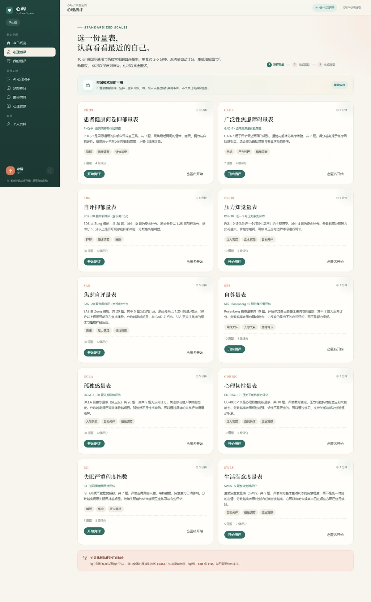
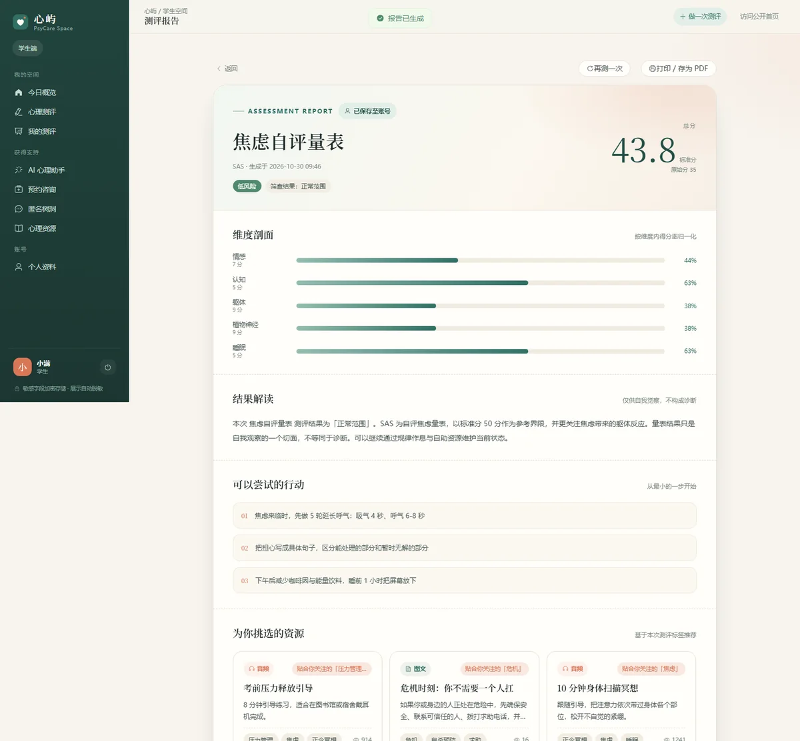
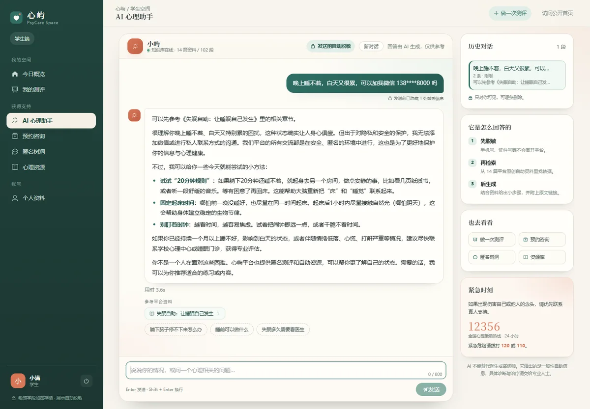

匿名测评与报告生成
10 套量表覆盖抑郁、焦虑、压力、自尊、孤独、心理韧性、睡眠与生活满意度。 计分器支持反向题、SDS / SAS 标准分（×1.25）与各量表特异的分级阈值， 提交后生成总分、维度得分、严重程度、危机提示与可执行建议。
- 匿名模式不写 user_id，只返回 AN-XXXXXXXXXX 编号，凭编号可再次打开报告。
- 高风险结果自动进入预警队列；学生端保留历史报告与同量表趋势图。
答题计分分级报告预警
学生自助、匿名表达、咨询连接与群体洞察，共用同一套账号、隐私与内容体系。 下面这些能力都在本地跑通过，不是概念图。
10 套量表覆盖抑郁、焦虑、压力、自尊、孤独、心理韧性、睡眠与生活满意度。 计分器支持反向题、SDS / SAS 标准分（×1.25）与各量表特异的分级阈值， 提交后生成总分、维度得分、严重程度、危机提示与可执行建议。
问题先在服务端清洗，再交给检索与生成。回答只依据平台原创资料， 并附上可点开的来源；危机表达不进入模型。
咨询师主页、方向筛选与预约，确认后开启 WebSocket 实时会话。 消息在发送时打码，落库与广播的都是脱敏文本；已结束的会话自动转为只读。
发布不记录账号，正文以 AES-256-GCM 加密存储，展示前自动脱敏； 识别到风险表达时，附带心理援助热线提示。
推荐以测评标签为主、浏览历史为辅，理由对用户可见。 看板只出聚合值：样本少于 5 人的分组合并为「其他（已聚合）」。
风险预警队列、资源上下架、树洞审核、用户与角色列表（昵称、手机、邮箱均为掩码）， 以及 AI 知识库管理：上传 Markdown、查看切片、删除资料、重建索引。上传成功即可被助手检索，无需重启服务。
截图来自本地演示环境，数据由种子程序生成，不含任何真实用户信息。 学生空间与公开门户是两套入口，测评、报告与重测都在登录后的空间内完成。



不是把题目搬上来，而是把反向题、标准分、分级阈值和危机标记都写成可回归的规则。 每一次改动，都会用低分、高分与关键题阳性三类样本重新核对。
0–3 计分；第 9 题阳性直接标记危机
0–3 计分，按总分分级
10 道反向题，标准分 ×1.25
5 道反向题，标准分 ×1.25
4 道反向题，按总分分级
Rosenberg 量表，5 道反向题
9 道反向题，按总分分级
0–4 计分，分数越高韧性越强
0–4 计分，按总分分级
1–7 计分，五个条目求和
怎么验证的： 一个 Python 脚本直接调用计分接口，逐项核对总分、标准分、严重程度、风险等级与危机标记， 覆盖 10 套量表的 21 条边界用例；学生端的答题、报告与移动端布局另有 12 项端到端检查。
从字段、序列化、日志到统计聚合，每一层都假设「数据会泄露一次」， 然后提前把损失压到最小。这是整个项目的主线，也是最难在答辩里讲清楚的部分。
手机号、身份证、银行卡与邮箱在保存前打码；运行日志再由 Logback 转换器打一次，避免从日志侧泄漏。
手机号与邮箱用 AES-256-GCM（随机 IV、密文含认证标签）落库，同时保留掩码列，列表页不接触明文。
Jackson 自定义序列化器配合 @Sensitive，管理员看到的昵称是「望*」，接口层不返回联系方式。
分组人数少于 k（默认 5）合并为「其他（已聚合）」；预警列表只显示掩码昵称或匿名编号。
演示环境内置了默认密钥，方便本地一键运行；正式部署应通过环境变量注入 JWT_SECRET 与 APP_CRYPTO_KEY， 并对密钥做托管与轮换。更换加密密钥会导致历史密文无法解密，这一点也写进了文档。
Spring 是脱敏的可信边界：Python 服务只会收到清洗后的文本，模型看不到手机号。 前端气泡里的掩码只是预览，真正的判定在服务端。
自伤 / 伤人相关表达由规则直接拦截，返回 12356、120、110 与校内求助路径，不经过检索，也不交给生成。
不给药名、剂量、停药或换药方案，只提供如何与医生沟通、如何记录副作用。边界写在提示词里，也写在资料里。
用户点「停下」时，已生成的部分同样保存，历史里不会出现半条空消息；网络抖动且尚未吐字时自动重试，最多 3 次。
conversationsessionprivacystatus
sourcesdeltafinalerror
只有回答里真正点名的 doc_id 才映射成来源；同一个 doc_id 同时用于向量库、平台资源与来源链接，改一篇资料不用改三处。
量表、题目、反向标记、分级阈值都存在题库里，计分器只读规则。新增量表不用改服务层代码。
匿名测评不落 user_id，只生成随机编号。编号是唯一的找回凭据，报告与历史都不会反查身份。
看板在样本不足时不画「假趋势」：低于 k 的分组直接合并，避免小样本反推出具体的人。
平台不在线开放登录，这个页面只做展示。完整代码在本地仓库，按下面三步即可启动； AI 助手是可选依赖，没启动时测评、咨询、树洞与看板都不受影响。
# 1) 后端：JDK 17 + MySQL 8
mvn -DskipTests package
java -jar target/psycare-1.0.0.jar
# 2) 前端：Node 20
cd frontend
npm install
npm run dev
# → http://localhost:5173
# 3) AI 助手（可选）
# 另起独立的 FastAPI 检索服务，端口 8002